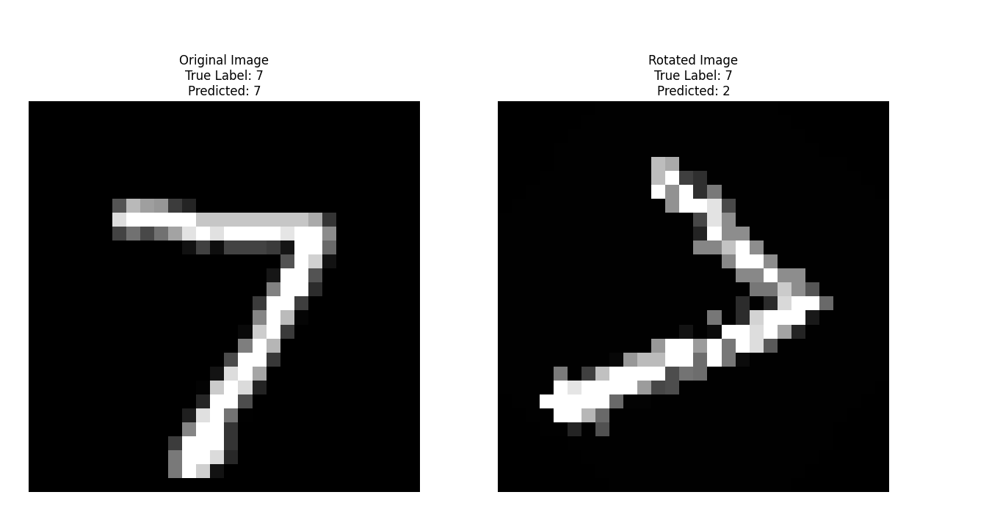

During my recent stint at a surgical navigation startup, while the company was cobbling a product demo, which I was heavily involved in, I started looking at point clouds, and I embarked on a personal project to leverage deep learning for point cloud processing.
Problems with CNNs

"Just like many other famous technologies in deep learning, the main challenge of a technology in deep leaning is probably invariance. Invariance is tightly related to efficiency, both in training speed and data. For example, CNN has translational invariance or equivariance, which means if we translate an object in an image from place A to place B, the learned object feature is also translated to place B. Thank to this property, we need not translate an object from places to places for data augmentation. However, CNN cannot be rotation invariance. That ‘s why we have to rotate the input images for data augmentation during training. In point clouds, other than the above two invariances, we have to consider one more: permutation invariance, in which the learned point cloud features are consistent no matter how the points are stored in the input file. Therefore, the three invariance challenges are: translation invariance, rotation invariance, and permutation invariance."

PointNet Architecture


Datasets
- 3DMatch: 3DMatch Dataset - Focused on 3D reconstruction and matching. It is a collection of 3D scans used to benchmark algorithms for 3D surface reconstruction and to align 3D scans in the field of computer vision. The primary goal of 3DMatch is to facilitate the development and testing of algorithms that can match and align 3D data from different sources or viewpoints.
- ShapeNet: ShapeNet - Large-scale, richly-annotated dataset of 3D shapes. It's designed for various tasks like object recognition and segmentation in the realm of computer vision and AI.